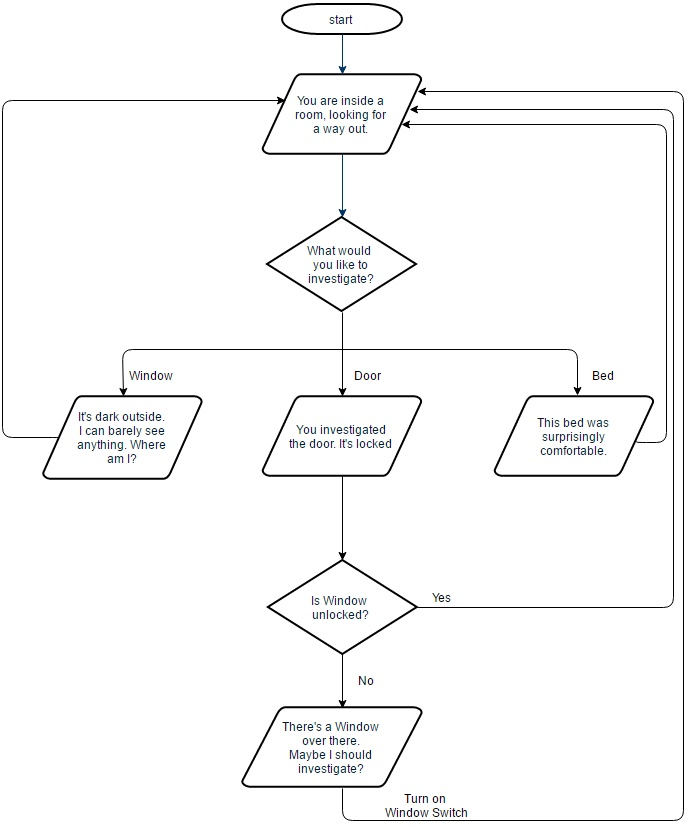
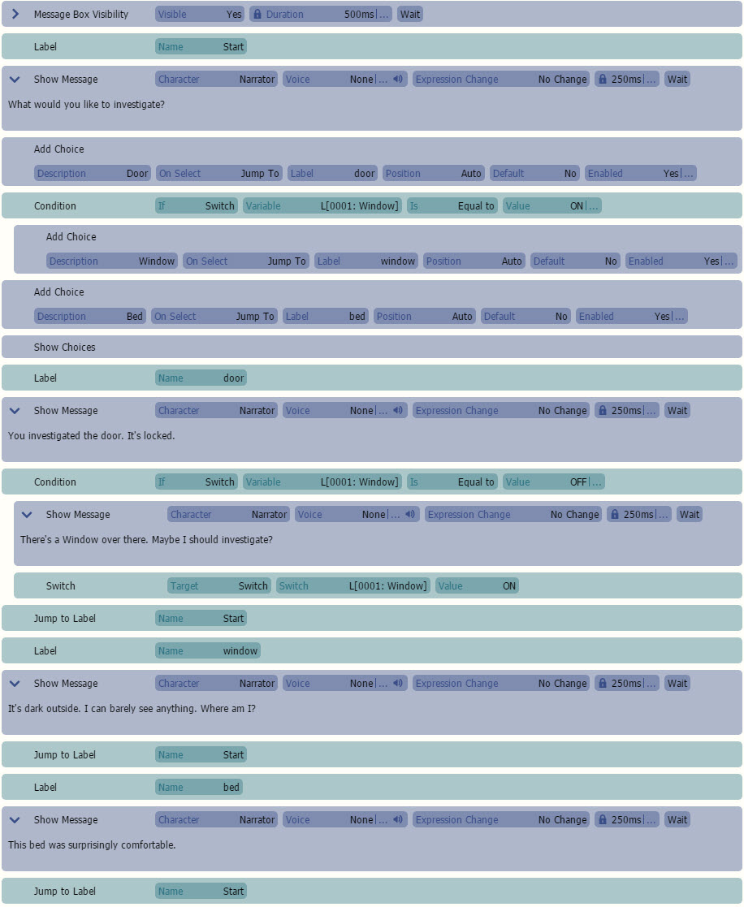

如果您使用带有“运行并行”并且“单一实例”未选中的通用事件调用通用事件，则会创建一个新的独立实例，该实例与场景并行运行。这意味着如果您在循环中执行 10000 次调用，将创建 10000 个新实例，根据情况，这可能会降低性能。
如果您勾选通用事件的“内联”复选框，命令将在运行时复制并粘贴到场景中，因此在这种情况下，调用不会产生性能开销。但是，这不适用于参数化通用事件，也不适用于递归。HTML
条件选择

条件选择

在本教程中，我们将教您如何制作动态选择。这意味着某些选择直到您触发一个标志才会出现。由于这是一个高级概念，因此我们不建议尝试本教程，直到您理解变量、开关、标签和条件的工作原理。
下！